Name one constraint that bound for you in the last 24 hours. What did you give up at the margin?
Think about:
What was tight? Time, dollars, attention, energy?
Consider:
What did you give up to do what you did?
Think 60s · Pair 90s · Random call × 4
ECON 2316 • Microeconomic Theory • Chapter 1
Optimization, equilibrium, and the empirical turn — what 2316 adds on top of Principles.
Dr. Richeng Piao
Department of Economics
Northeastern University — 100 min
By the end of class today, you will be able to…
1.1
Recognize the optimization-under-constraint template $\max f(x)$ s.t. $g(x) \le 0$ ; identify agent / objective / constraint in a real scenario.
1.2
Compute equilibrium price/quantity of a linear S&D system before and after a parameter shift.
1.3
Distinguish marginal from average reasoning; explain why a profitable firm can still want to contract.
1.4
Critique a correlational headline by stating its counterfactual; identify whether RCT or DiD applies.
1.5
Identify which of four buckets — consumer, producer, market structure, market failure — a real micro question lives in.
Quick-fire — wake up your Principles muscles. Hands only, no grades.
Q1. What does scarcity mean? One-line answer.
Q2. Wage is $20/hr. Opportunity cost of studying for 5 hours?
Q3. True or false: if marginal cost is \$5, average cost is also \$5.
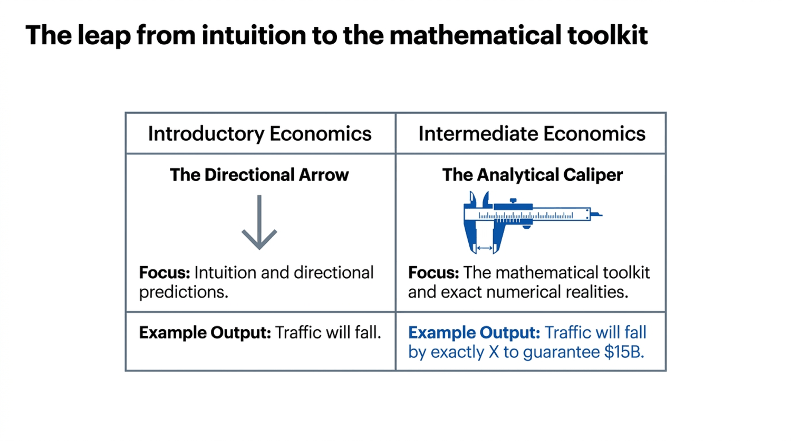
January 5, 2025 — 12:01 a.m. New York City turns on the first congestion-pricing program in the United States. Electronic gantries below 60th Street start charging passenger vehicles $9 to enter midtown.
A Principles student can predict the direction : trips fall.
But the MTA needed the magnitude — and the magnitude is what graphs alone can’t deliver. They had a $15 B bond to service, ambulances to clear, and a coalition to keep.
First-Month Data (Feb 2025)
Principles taught you the arrow. 2316 teaches you the number.
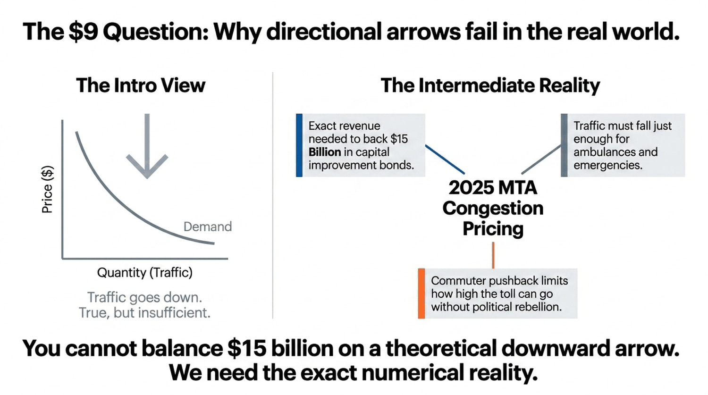
10 min · The template that drives every chapter
Scarcity forces choice
In Principles, scarcity was a premise . In 2316, it’s the structure .
The Template
$$\max_{x \in X} f(x) \;\;\text{s.t.}\;\; g(x) \le 0$$
Choose $x$ from $X$ to make $f(x)$ as large as possible, subject to constraint $g$.
Memorize the structure — not because it’s hard, but because every chapter just relabels $f$, $x$, $g$.
| Chapter | Objective $f$ | Choice $x$ | Constraint $g$ |
|---|---|---|---|
| Ch 5 Consumer | Utility | Bundle of goods | Budget line |
| Ch 8 Cost min | $-(wL + rK)$ | $K, L$ | Output target $f(K,L) = q$ |
| Ch 9 Profit max | Profit | Output $q$ | Cost function |
| Ch 14 Game theory | Player’s payoff | Strategy | Opponent’s strategy |
| Ch 17 Externality | Social welfare | Pollution level | Pollution budget |
If you understand the template, you understand the spine of the course.
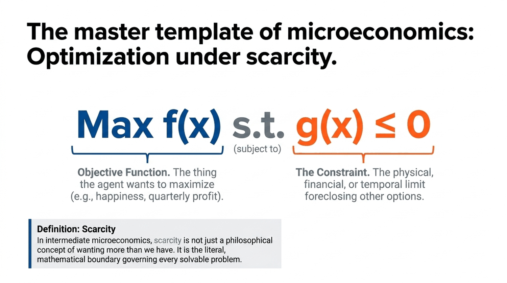
Maya is a junior who freelances as a graphic designer. She’ll show up again in Ch 5, Ch 6, and Ch 19 — she’s the textbook’s canonical labor-leisure character.
168
hours/week
−
56
sleep
−
15
in class
=
97
hours to split between study ($S$) and paid work ($W$) at
$18/hr
.
Her grade produces value at a rate that declines with study hours. How should she split 97 hours?
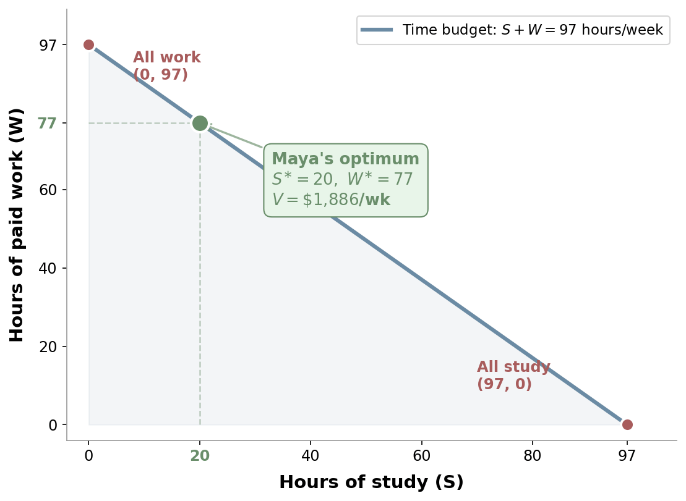
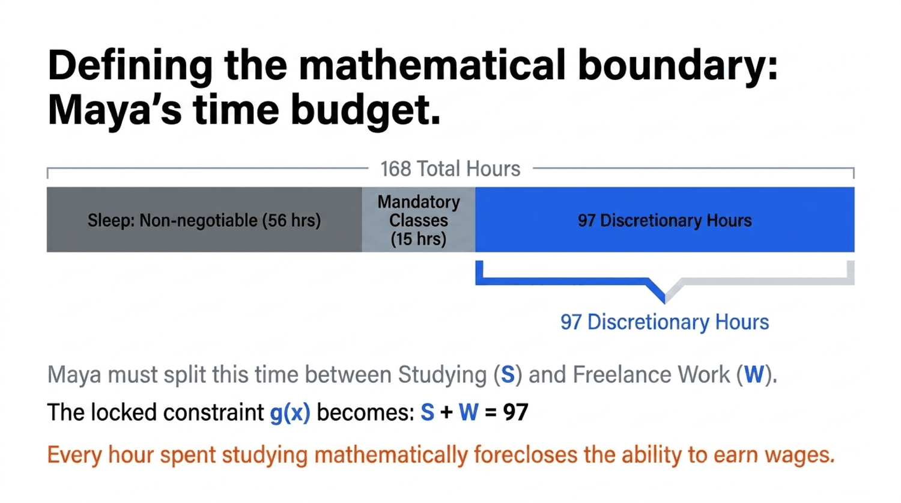
Try it — press 2 for a 2-min timer. We’ll go through it together after.
Problem
Maya has 97 free hrs/wk ; wage = $18/hr . Study value declines:
| Hours studying | MV (per hour) |
|---|---|
| 1–10 | $30 |
| 11–20 | $20 |
| 21–30 | $15 |
| 31+ | $0 |
How should she split her 97 hours?
Set up
Rule: study iff MV > wage. Stop when MV drops below $18.
Solve
$S^* = 20$, $W^* = 77$
$V = 10(30) + 10(20) + 77(18) = \$1{,}886$/wk
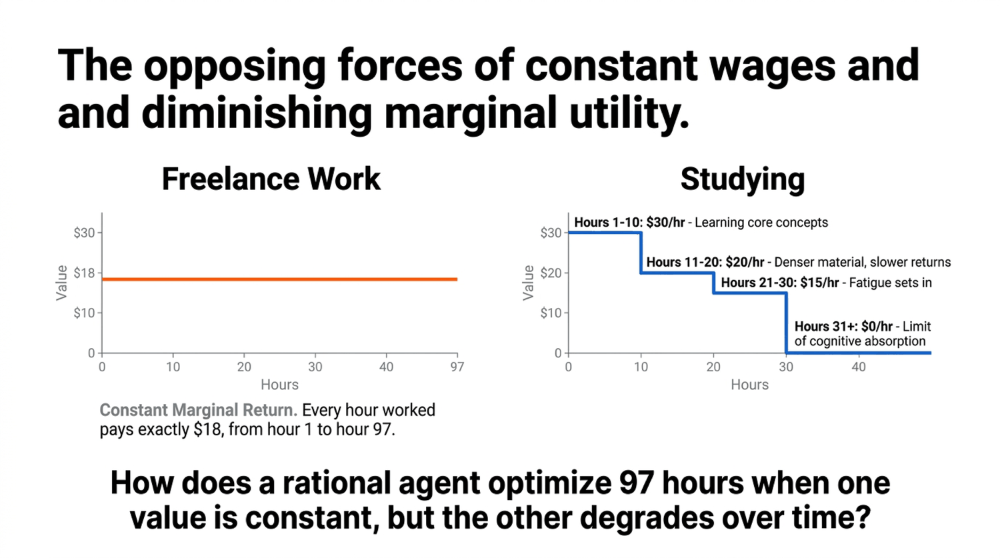
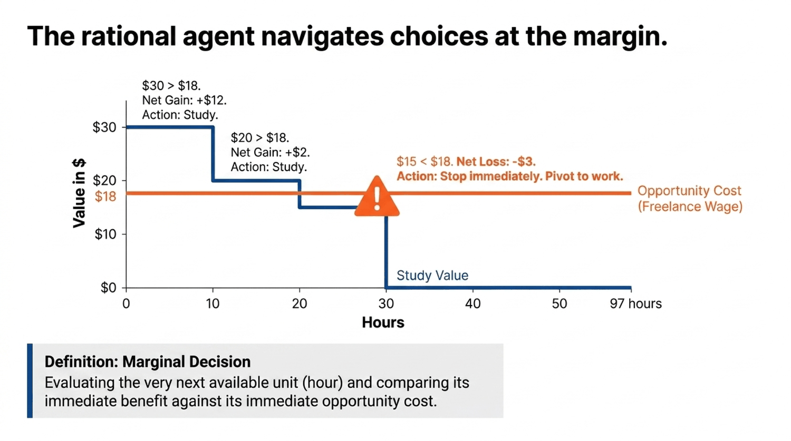
An individual time budget and a billion-dollar policy budget — both fit $\max f(x) \;\text{s.t.}\; g(x) \le 0$.
Maya (the individual)
$f$: total weekly value (study + work)
$x$: hours allocated to study
$g$: $S + W = 97$
Optimum: $S^* = 20$, $V = \$1{,}886$/wk.
Harvard (the institution)
In 2025–26 , Harvard made tuition free for families under $100K ; full cost-of-attendance waived under $200K .
$f$: access / yield / SES diversity
$x$: aid schedule by income band
$g$: finite endowment-funded aid budget
The actors differ. The constraints differ. The mathematical problem is the same.
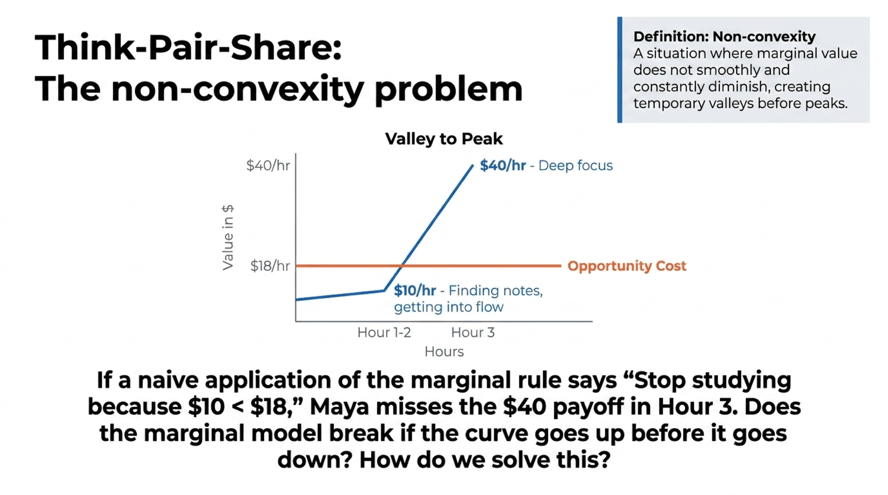
In Ch 5 we’ll replace Maya’s step function with a smooth utility function and use the Lagrangian to solve the continuous version.
The lesson survives:
At the optimum, the marginal rate of substitution equals the relative price — the slope of the indifference curve equals the slope of the budget line.
The MRS preview becomes the centerpiece of Ch 4.
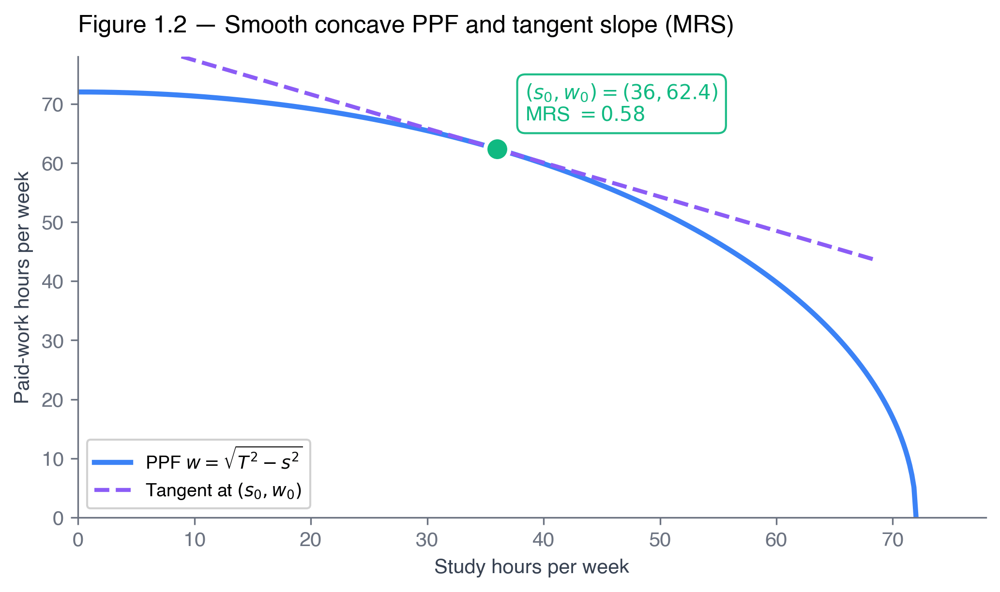
Maya already studied 21 hours. Should she take her 22nd hour of study, or work an hour at \$18?
Reminder: study is worth \$30/hr (1–10), \$20/hr (11–20), \$15/hr (21–30), \$0/hr (31+).
60 sec to vote
Hour 22 falls in the $15/hr block . Wage of $18 strictly dominates — she should work, not study.
Trap (B): $20 is the marginal value of hours 11–20, not hour 22. Marginal means here , not “in this neighborhood.”
Name one constraint that bound for you in the last 24 hours. What did you give up at the margin?
Think about:
What was tight? Time, dollars, attention, energy?
Consider:
What did you give up to do what you did?
Think 60s · Pair 90s · Random call × 4
14 min · Mutual best-response, not "system at rest"
Wrong intuition
"Equilibrium" = a system at rest because nothing is happening.
Right intuition
Each agent’s action is already the optimal response to every other agent’s action. No one wants to change.
Shock it → agents re-optimize against each other’s new best moves → we land at a new mutual best-response.
The interesting questions
Which way does the system move? How fast does it return?
We’ll meet this idea again as Nash equilibrium in Ch 14.
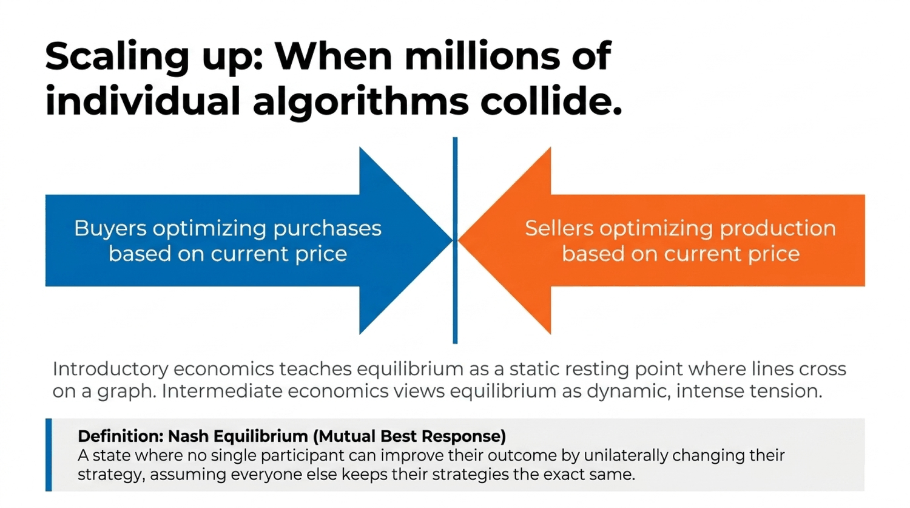
HPAI — highly pathogenic avian influenza — forced the culling of ~168 million laying hens from 2022 to early 2025.
Pullets take 18–20 weeks to reach laying age → supply curve shifted sharply inward in the short run.
Demand barely moved — eggs are a staple with few breakfast substitutes.
Jan 2025
: $4.95/dozen (FRED
APU0000708111
) —
+96% YoY

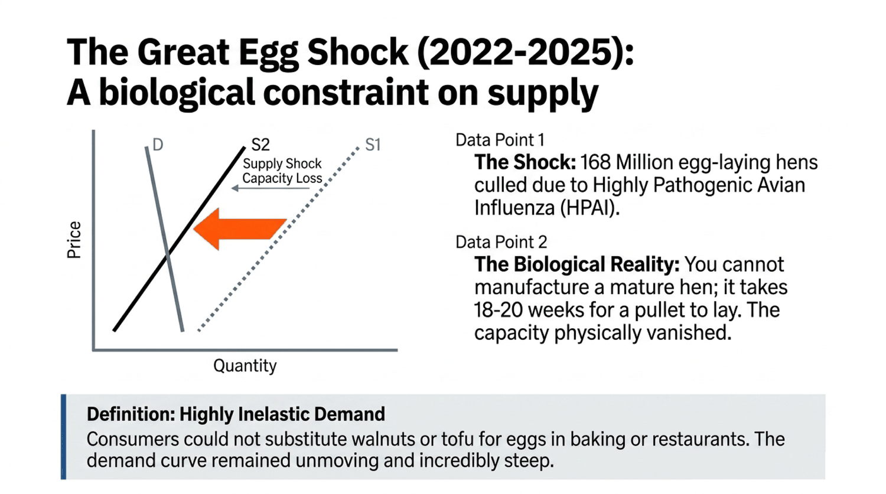
APU0000708111
— the data
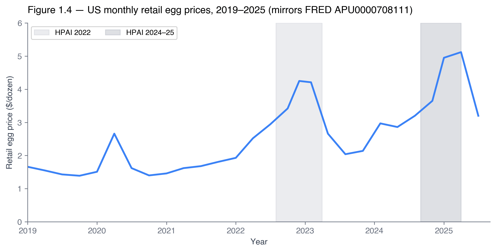
When demand is steep, the shock lands mostly on price — not quantity.
Try it — press 3 for a 3-min timer. Find $P_0^*, Q_0^*, P_1^*, Q_1^*$.
Problem
Linear S&D for the egg market:
$Q_d = 200 - 5P$
$Q_s = 50 + 10P$
HPAI shifts supply inward by 30 at every price:
$\tilde Q_s = 20 + 10P$
Find pre- and post-shock equilibrium.
Set up
Equilibrium = market clearing. Set $Q_d = Q_s$, solve for $P^*$, plug back for $Q^*$. Repeat with the new supply.
Solve
$\Delta P = +\$2$ (+20%) · $\Delta Q = -10$ (-6.7%)
Of 30 "lost" units, 20 are clawed back via the price response.
$\Delta P = +\$2$ (+20%) · $\Delta Q = -10$ (-6.7%)
Of the 30 "lost" units, 20 are clawed back via the price response — demand is steeper than the shift.
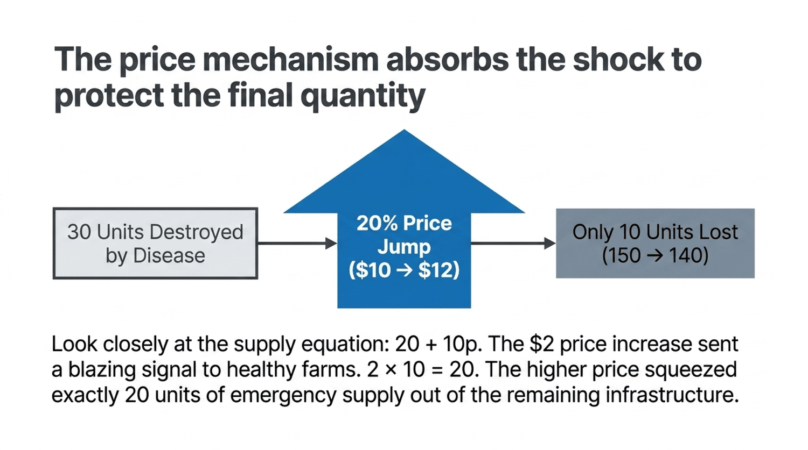
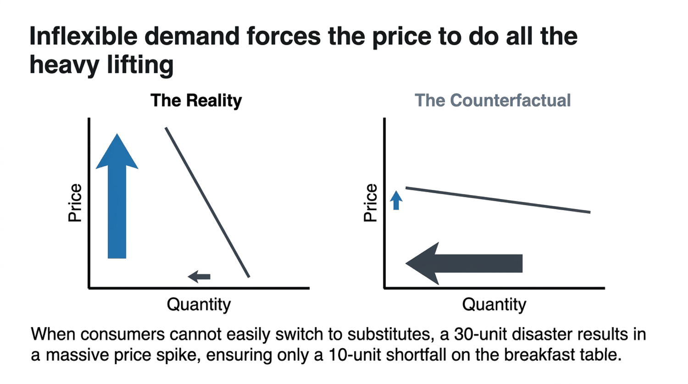
Linear S&D: $Q_d = 200 - 5P$, $Q_s = 50 + 10P$. Supply shifts inward by 30 at every price.
The new equilibrium price is closest to:
60 sec to vote
Solve the new market-clearing condition: $200 - 5P = 20 + 10P \implies P^* = \$12$.
Trap (D): students subtract 30 from quantity supplied at fixed price — that’s a movement-along-the-curve confusion. The shift moves the whole supply curve; always re-solve for the new equilibrium.
The egg market reached equilibrium at $5/dozen . Does that mean $5 is the right price?
Why or why not? Open discussion — 5 minutes, 3–4 voices.
HeadsUp 1.2: "Equilibrium" = market cleared. It says nothing about fairness or efficiency . We’ll formalize the welfare question in Ch 10 (when competition is efficient) and Ch 17 (when it isn’t).
5 min
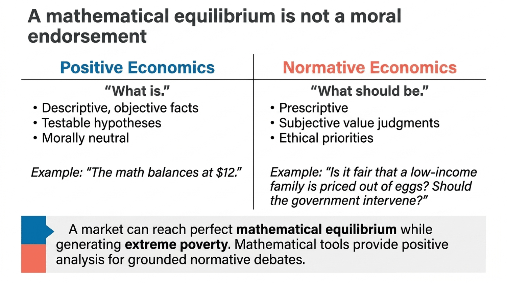
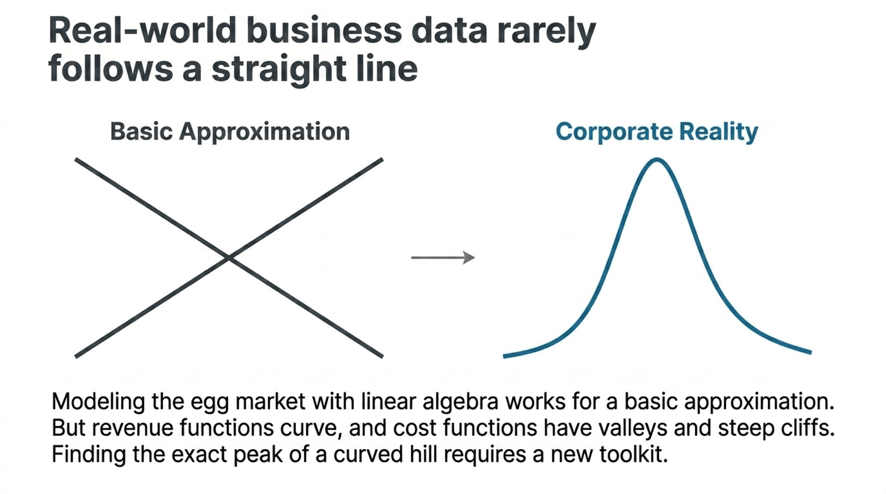
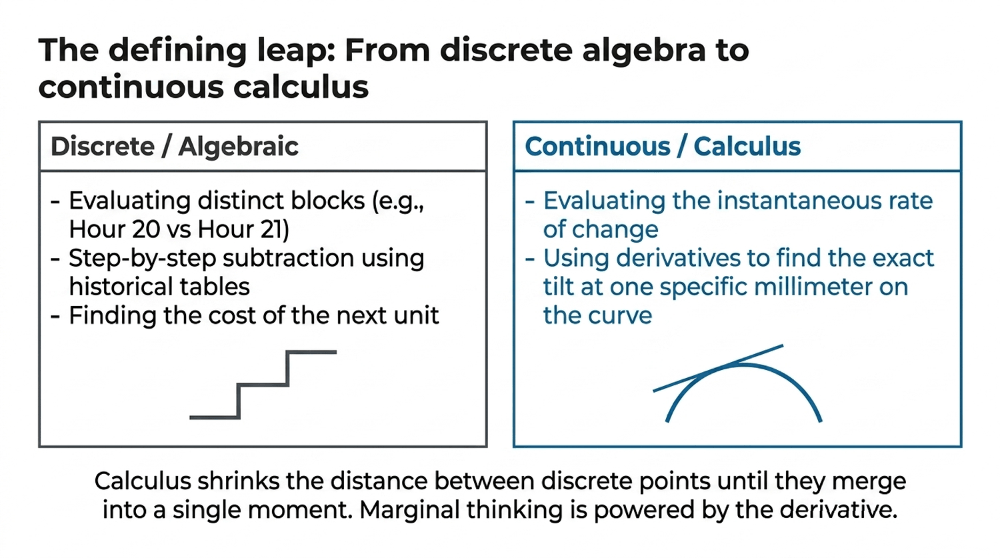
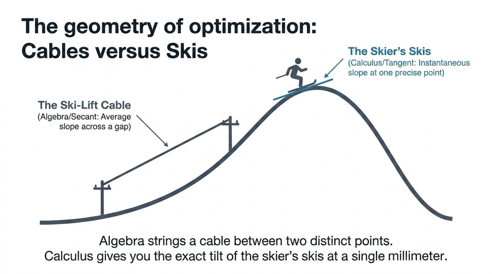
11 min · The mindset change that needs calculus
Principles
Marginal cost = cost of the next discrete unit :
$C(q) - C(q-1)$
Slope of a secant line .
2316
Shrink the secant horizontally to zero → tangent line:
$$MC(q) = \frac{dC(q)}{dq}$$
Slope of the tangent .
"At what $q$ should the firm stop?" becomes "at what $q$ is $dR/dq - dC/dq = 0$?" — a one-line calculus problem .

The tangent slope ( marginal ) and the chord slope ( average ) are different objects .
HeadsUp 1.3: using one when you want the other is the most common exam-day error. Average tells history; marginal tells the next decision.
Poll #3 in 5 minutes will hammer this trap.
For a differentiable $f(x)$, an interior maximum or minimum $x^*$ on an open interval satisfies
$$f'(x^*) = 0.$$
Geometry: at the top of a smooth hill, the tangent is horizontal.
Necessary, not sufficient. SOC distinguishes max from min: $f''(x^*) \le 0$ (max), $\ge 0$ (min).
Quick example: $\pi(q) = 10q - 0.5q^2$ → $\pi'(q) = 10 - q = 0$ → $q^* = 10$, $\pi(10) = 50$.
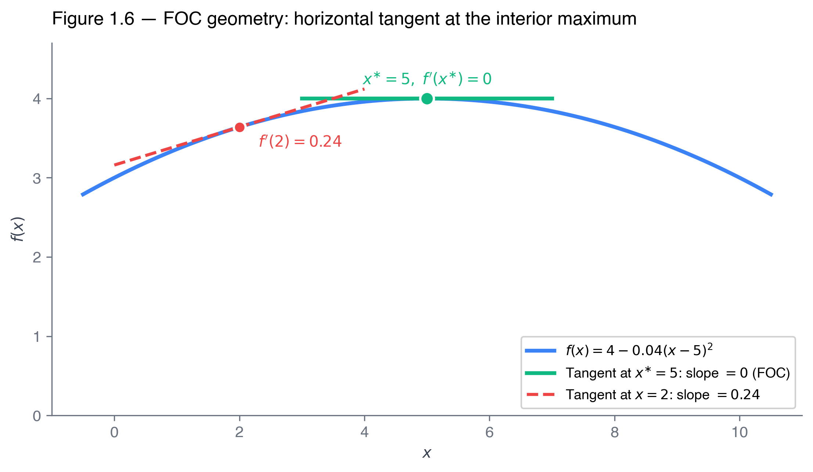
Try it — press 3 for a 3-min timer. Compute pre-hike vs post-hike annual revenue, then the net change.
Problem
What is the net change in annual subscription revenue?
And: at what churn would the hike break even?
Set up
Pre-rev = $N \cdot P_0 \cdot 12$. Post-rev = $0.98 N \cdot P_1 \cdot 12$ (98% retention). Compute the difference.
Solve
Net change: +$789M / yr
Per sub: $12(1-c) - 96c$. Break-even: $c^* = 12/108 \approx 11\%$.
Netflix is far from break-even — subs are inframarginal.
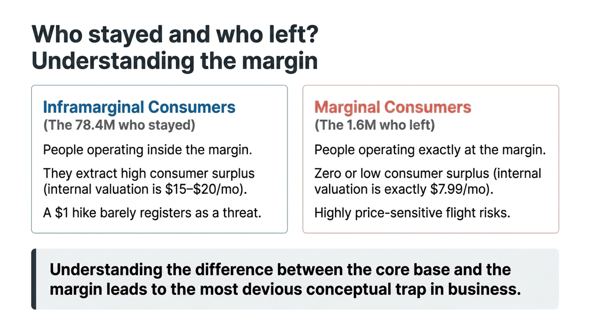
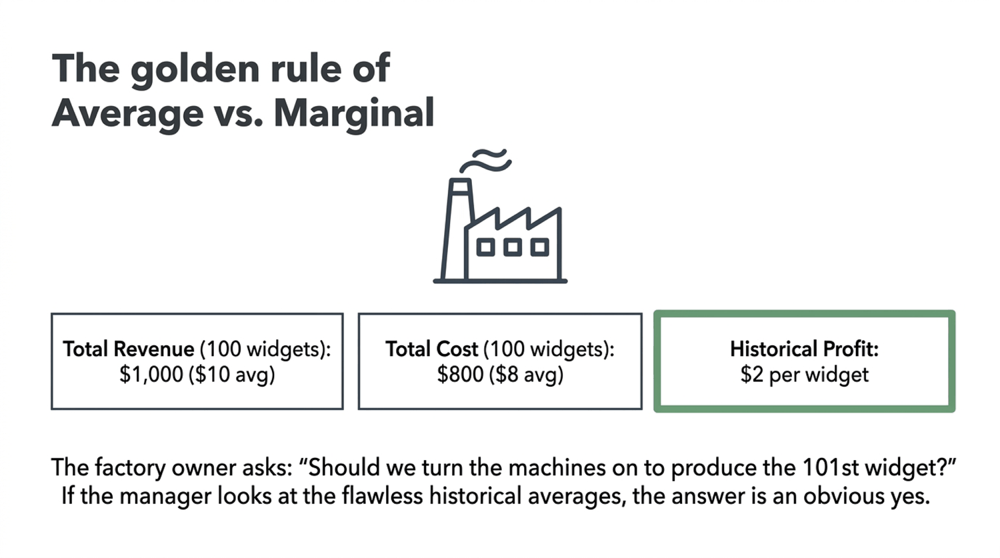
A firm has total revenue \$1,000 and total cost \$800 at $q = 100$. At $q = 100$: $MR = 4$, $MC = 5$ (\$/unit).
Should the firm produce the 101st unit?
60 sec to vote
(A) and (B) are both true statements about history — yes, profitable on average. Neither answers the question. At the margin: $MR = 4 < MC = 5$ . Make the unit, lose $1.
Tape this to your notebook: Average tells you about history . Marginal tells you about the next decision .
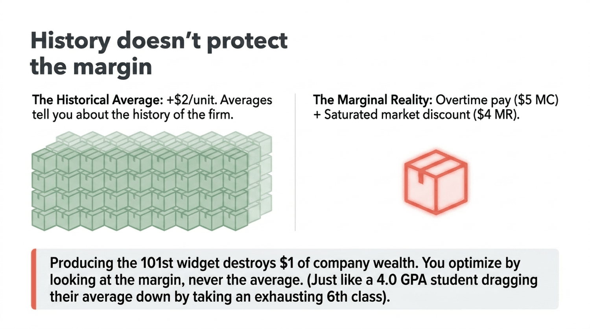
5 minutes
Be back at the wall clock + 5.
8 min · A model is useful because it leaves things out
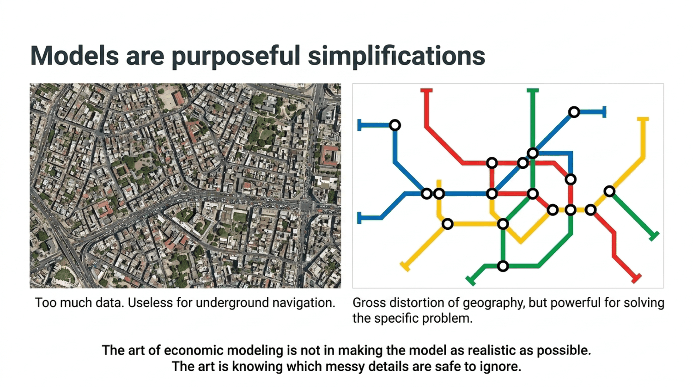
Mid-2025: Amazon crosses one million warehouse robots — machines now move shelves alongside human workers across its fulfillment network.
It’s a classic firm-level optimization problem: pick the mix of capital (robots, conveyors) and labor (pickers, loaders) that ships the same orders at the lowest cost. As wages rise and capital gets cheaper, the mix shifts.
We’ll formalize this in Ch 7–8.
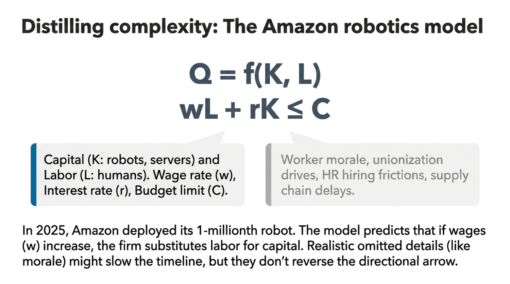
When this course assumes perfect competition , rational choice , or constant returns to scale , that’s a baseline assumption — not a claim every market actually works that way.
The right question is not :
"Is this assumption true?" (Almost none are, strictly.)
It’s:
"Does relaxing this assumption change the result I care about?"
Amazon model: $q = f(K, L)$ s.t. $wL + rK \le C$.
Which assumption is load-bearing for the qualitative prediction "as $w$ rises, more robots"?
60 sec
For the qualitative direction (wage up → robots up), substitution at the margin must be possible. Perfect complements (Leontief) gives no substitution; perfect substitutes gives a corner.
(A) and (C) sharpen the answer but aren’t load-bearing for the direction . Cross out an assumption mentally and ask: would the punchline still hold?
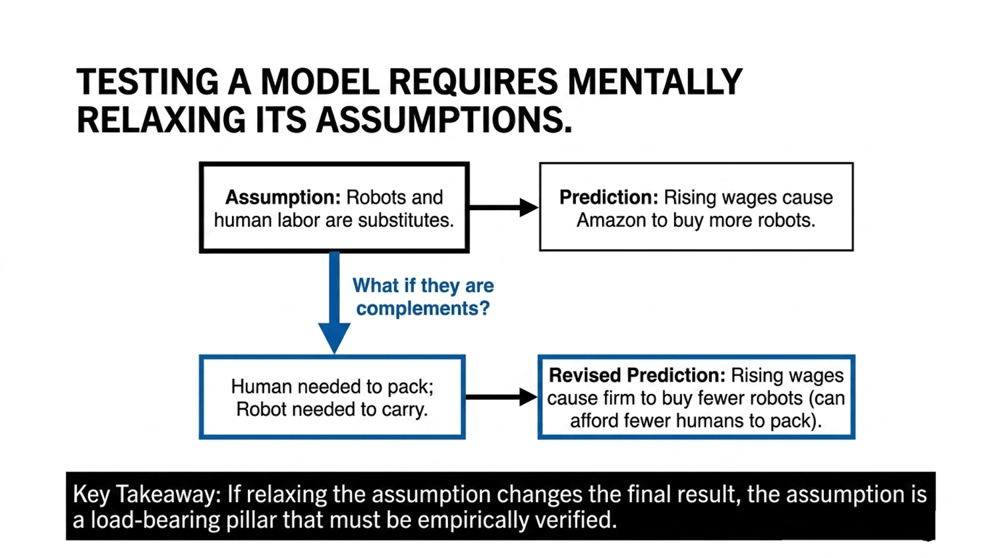
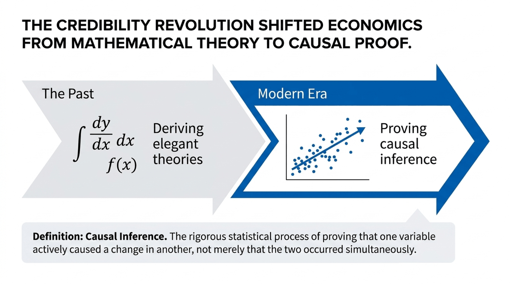
16 min · Counterfactuals, RCTs, difference-in-differences
The causal effect of $X$ on $Y$ for a unit is the difference between $Y$ with $X$ and $Y$ without $X$, holding everything else constant.
The problem: only one of those two outcomes can ever be observed for the same unit at the same time.
HeadsUp 1.5: "States with more teachers per student have higher test scores." This is a correlation . The causal interpretation — "hiring more teachers raises scores" — doesn’t follow without more work.
Habit: when you see "$X$ is associated with $Y$," ask what is the counterfactual, and how was it constructed?
Correlation
$X$ and $Y$ move together in the data. That’s all.
Causation
Changing $X$ makes $Y$ change — holding everything else constant.
A correlation can come from causation , reverse causation , a hidden confounder , or pure chance .

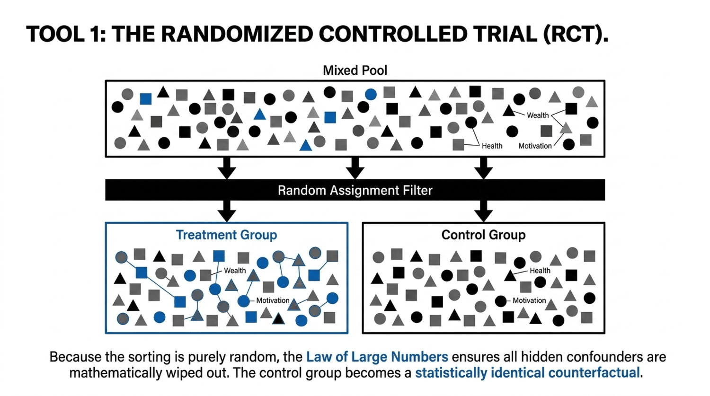
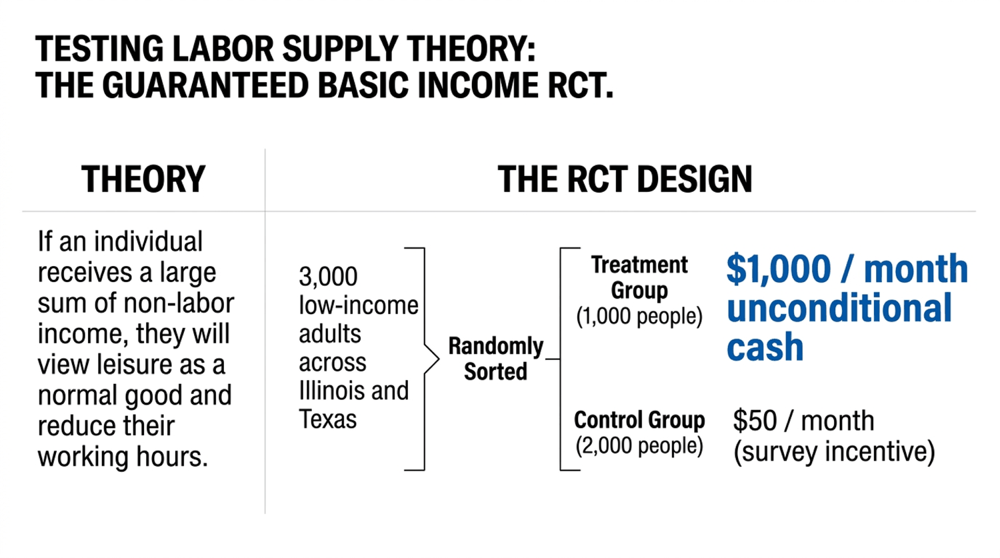
A near-ideal natural experiment:
DiD comparison:
First-month causal effects
Vehicle entries: -1M
Holland Tunnel speed: +51%
Transit ridership: +7%
Conditional on parallel trends — we'll defend that assumption from Ch 2 onward.
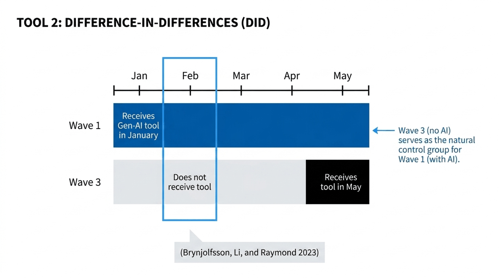
Try it — press 3 . Find $R(9)$, $R(12)$, then the revenue-max $P^*$.
Problem
Pre-toll daily demand for Manhattan CBD entries:
$Q_d(P) = 300{,}000 - 5{,}000 P$
Find:
Set up
$R(P) = P \cdot Q_d(P) = 300{,}000P - 5{,}000P^2$. Differentiate, set $R'(P) = 0$ for the max.
Solve
$R(30) \approx \$4.5$ M/day (revenue-max)
Why MTA picked \$9, not \$30: revenue isn’t the only objective. At \$30, entries fall to 150K (half) → political revolt. The MTA solved a constrained problem.
Vote by show of hands per question. RCT · DiD · RDD · "no credible design yet"
1
Does $1{,}000$/mo basic income cause people to work less?
RCT — Vivalt et al. 2024 ✓
2
Did NYC congestion pricing reduce CBD traffic?
DiD — geographic + time
3
Did California’s $20 fast-food minimum wage reduce employment?
DiD — live debate, Ch 19
4
Does ChatGPT make programmers more productive?
RCT or staggered DiD
Different questions admit different identification strategies. Match the design to the question.
"States with more teachers per student have higher test scores."
Stand on the spectrum from "this is causal" to "this is just correlation." Defend your spot.
"Pure causal"
"Mixed"
"Pure correlation"
4 min · 2 students explain
6 min · A coat hanger for the rest of the semester

Consumer theory (Ch 4–6): Maya, Harvard, Netflix subscribers. Lagrangian on utility.
Producer theory (Ch 7–9): Amazon $K, L$. Cost min, profit max, supply.
Market structure (Ch 10–14): competition, monopoly, oligopoly, game theory.
Market failures (Ch 15–18): uncertainty, info, externalities, behavioral.
Factor markets (Ch 19): closes Maya’s arc — her wage as equilibrium price.
California ISO runs the nation’s largest fleet of grid-scale battery storage. Every five minutes, battery operators decide whether to charge or discharge.
Intertemporal optimization
Lagrangian on a state-of-charge constraint linking today to tomorrow — Ch 5 .
Production & supply
Round-trip efficiency loss of 10–15% as a cost; output is power sales — Ch 9 .
Strategic interaction
Other batteries with overlapping discharge schedules — oligopoly — Ch 13 .
Externalities
Discharging displaces carbon-heavy peakers — positive externality — Ch 17 .
2024 anchor: daily real-time spread averaged ~$223/MWh — a big arbitrage if you can time it. No single chapter solves CAISO. Every chapter does part of it.
Maya the freelancer ($w = \$18$/hr)
Returns: Ch 5 (Lagrangian), Ch 6 (Slutsky), Ch 19 (closing wage)
HPAI eggs
+ FRED
APU0000708111
Returns: Ch 8/9/10 (cost, supply, LR equilibrium)
Netflix ad-tier
Returns: Ch 11 (Lerner), Ch 12 (price discrimination)
NYC congestion pricing
Returns: Ch 17 (Pigouvian, Coase, externalities)
Amazon $K, L$ — returns Ch 7–8 for the cost-min Lagrangian
Optimization is the spine. Every chapter just relabels $f$, $x$, $g$.
Marginal = derivative. $f'(x^*) = 0$ opens every interior optimization.
Equilibrium is mutual best-response, not "system at rest." Positive, not normative.
Models are purposeful simplifications. Ask "load-bearing?" not "true?"
Causal claims require a counterfactual. RCTs build it; DiD finds one in nature. "Correlation is not causation" is a methodology promise, not a slogan.
One thing I learned
Name one market force, decision, or empirical design from today and explain in one sentence why it matters for the rest of the course.
One thing I’m still confused about
Open-ended. Anything from today — or a connection you’re trying to make.
Enter your answer in Ch 1 Attendance — M2 on Canvas.
The most-confused item becomes the first 2-minute clarifier of Class 2.
Textbook Ch 1 — Adventures in Microeconomics . Walkthroughs 1.1–1.5 are the parallel worked examples for self-study.
Vivalt et al. 2024
— "Employment Effects of a Guaranteed Income," NBER WP 32719.
nber.org/papers/w32719
Brynjolfsson, Li, Raymond 2023
— "Generative AI at Work," NBER WP 31161.
nber.org/papers/w31161
FRED
APU0000708111
— egg prices monthly.
fred.stlouisfed.org/series/APU0000708111
Next class: Ch 2 — Supply, Demand, and Market Equilibrium (formal).